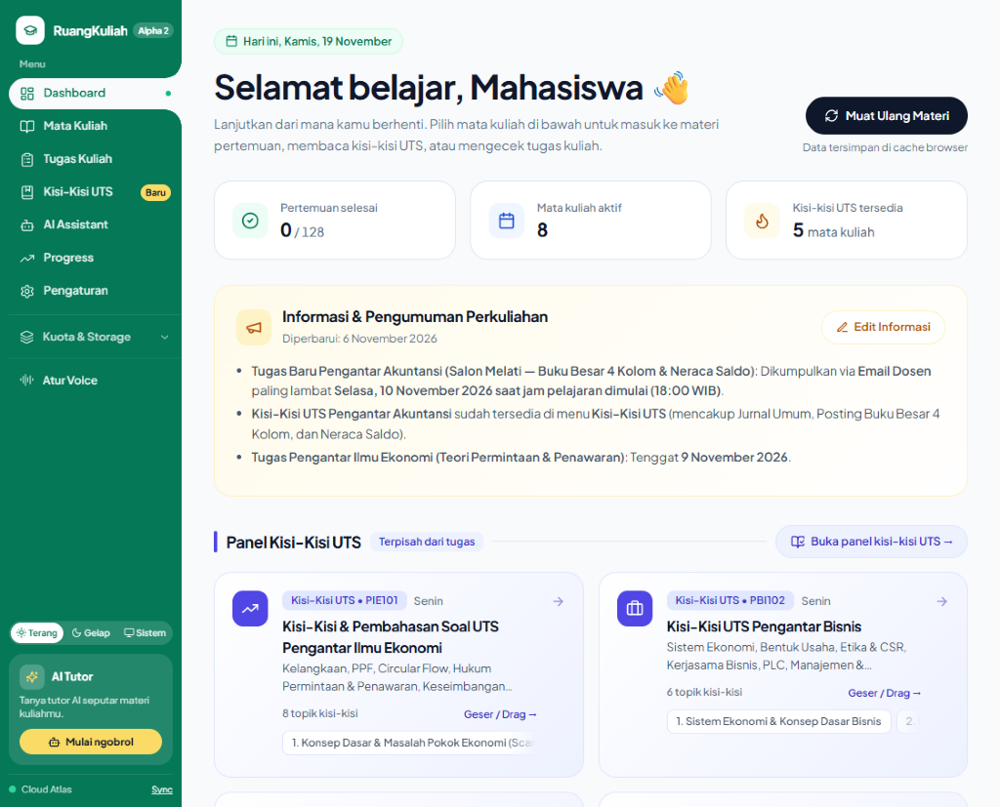
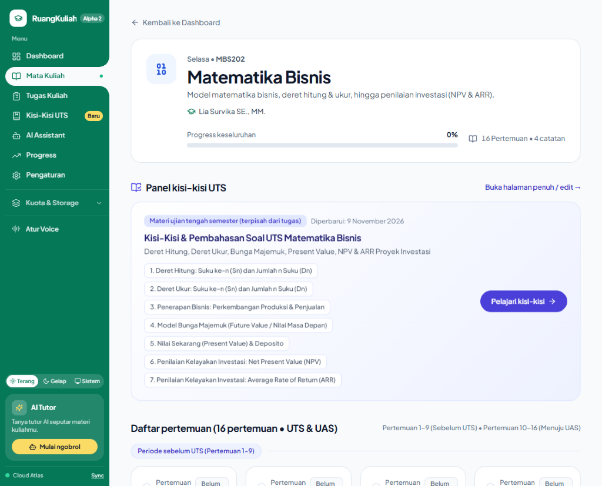
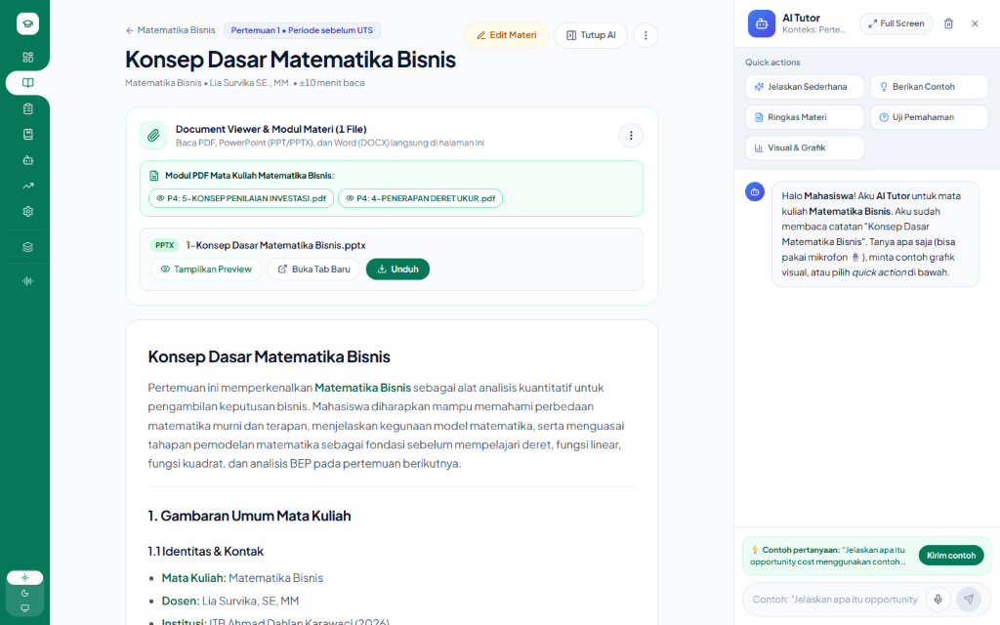
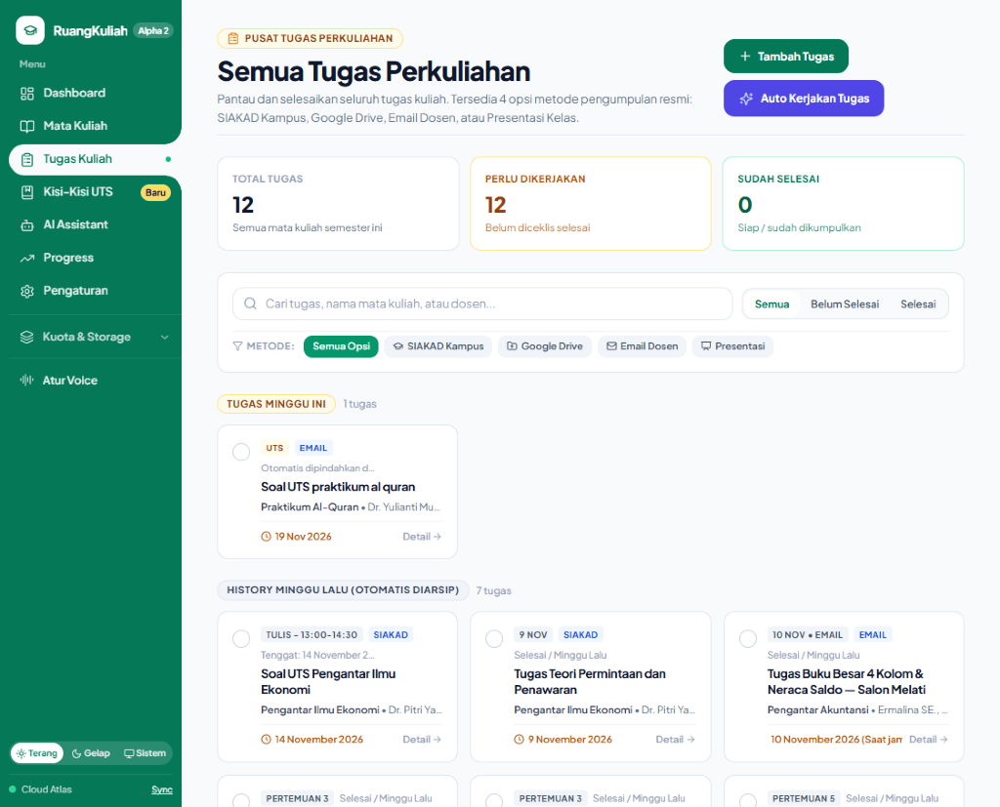
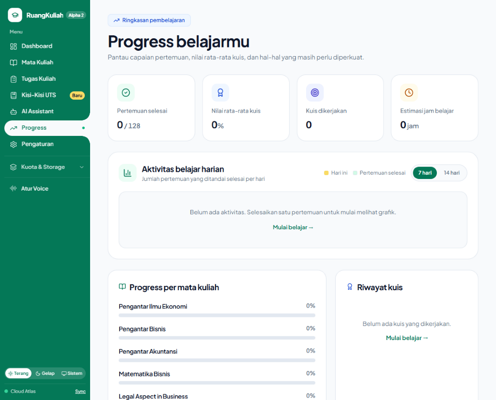
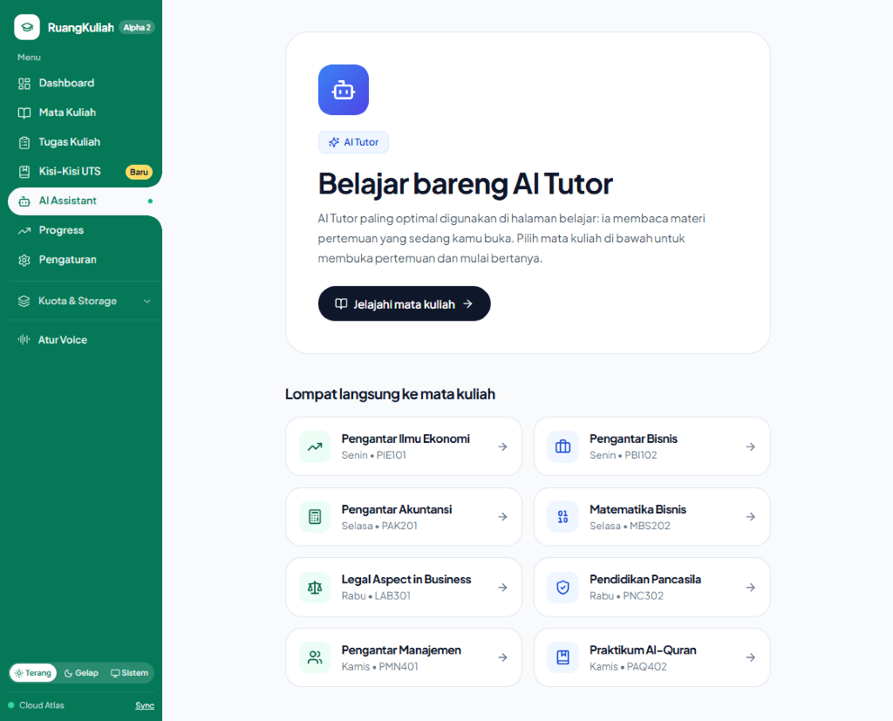

Terstruktur per Pertemuan
Setiap mata kuliah dipetakan menjadi 16 pertemuan (Periode Pra-UTS, UTS, Menuju UAS, dan UAS) lengkap dengan slide PPTX/PDF dan catatan baca terformat.
From a Simple Learning Website to an AI-Assisted Academic Platform.
Platform pembelajaran terpusat yang dibangun secara gratis untuk membantu mahasiswa mengorganisasi materi perkuliahan, mengelola pertemuan dan tugas mingguan, melacak progres belajar, hingga berdiskusi dengan AI Tutor berbasis konteks materi.

https://ruang-kuliah.vercel.app/) — menampilkan ringkasan 128 pertemuan, 8 mata kuliah aktif, papan pengumuman, panel Kisi-Kisi UTS, dan Ruang Tugas Kuliah.Ruang Kuliah dirancang untuk menyatukan seluruh kebutuhan belajar semester dalam satu ruang kerja: materi pertemuan, kuis latihan, pengingat tugas, pelacakan progres, dan asisten AI Tutor.
Setiap mata kuliah dipetakan menjadi 16 pertemuan (Periode Pra-UTS, UTS, Menuju UAS, dan UAS) lengkap dengan slide PPTX/PDF dan catatan baca terformat.
Mahasiswa dapat memantau tugas mingguan, kanal pengumpulan (SIAKAD, Drive, Email, Presentasi), riwayat kuis, dan persentase progres tiap mata kuliah.
AI Tutor membaca materi pertemuan yang sedang dibuka agar mahasiswa bisa bertanya, meminta penyederhanaan konsep, atau berlatih soal tanpa keluar halaman.
Sebelum Ruang Kuliah dibuat, materi dan informasi perkuliahan tersebar di berbagai grup chat, folder, dan tautan terpisah.
Seluruh fitur di bawah diverifikasi langsung dari aplikasi live (ruang-kuliah.vercel.app) dan kode sumber, dengan pemisahan jelas antara fitur aktif dan pengembangan lanjutan.
Menampilkan jadwal kuliah Senin–Kamis, papan pengumuman terbarui, panel Kisi-Kisi UTS (5 mata kuliah), serta halaman detail tiap mata kuliah (/courses/:courseId) dengan 16 pertemuan, pembagian Pra-UTS/UAS, dan indikator progres.

MBS202) dengan panel Kisi-Kisi UTS dan daftar pertemuan.Halaman belajar (/courses/:courseId/pertemuan/:meetingId) memuat catatan terstruktur dengan dukungan rumus matematika (KaTeX), pratinjau dokumen PDF (pdfjs-dist) dan PPTX, serta pemrosesan PDF berbasis backend (pypdf) untuk analisis tugas/materi.

Fitur /tugas menyediakan checklist tugas mingguan, filter status & kanal pengumpulan, serta arsip otomatis minggu lalu. Halaman /progress merekam pertemuan selesai (0 / 128), rata-rata kuis, grafik aktivitas 7/14 hari, dan progres per mata kuliah.

/tugas) dengan ringkasan 12 tugas, filter pengumpulan, dan arsip mingguan.
/progress) — grafik aktivitas harian, progres 8 mata kuliah, dan riwayat kuis.
/ai-assistant) — pintasan langsung ke AI Tutor di setiap mata kuliah.Riwayat pengembangan bertahap dari website materi statis menuju platform belajar interaktif dengan backend dan integrasi AI. Tidak ada tanggal rilis yang direkayasa untuk versi yang tidak terdokumentasi tanggalnya.
Fondasi awal untuk menyatukan materi kuliah yang sebelumnya tersebar agar mudah diakses oleh mahasiswa.
Menata materi berdasarkan alur pertemuan kuliah sehingga mahasiswa lebih mudah mengikuti silabus mingguan.
Memperbaiki hierarki visual dan konsistensi tata letak agar catatan materi nyaman dibaca.
Transisi dari pembaca materi menjadi aplikasi belajar lengkap dengan kuis, checklist tugas, pelacakan progres, dan dukungan PDF.
Tonggak utama Ruang Kuliah: menghubungkan frontend React dengan backend FastAPI, sinkronisasi data belajar, serta AI Tutor untuk penjelasan dan latihan soal.
Fase aktif saat ini untuk memastikan keandalan integrasi frontend-backend, stabilitas AI Tutor, dan responsivitas lintas perangkat.
AI Tutor ditempatkan langsung di samping materi pertemuan agar diskusi selalu mengacu pada konteks perkuliahan yang sedang dipelajari.
Panel AI Tutor (AITutorPanel.jsx) dapat diubah ukurannya atau diperluas ke layar penuh, lengkap dengan 5 quick actions: Jelaskan Sederhana, Berikan Contoh, Ringkas Materi, Uji Pemahaman, dan Visual & Grafik.
Peran edukatif AI diarahkan untuk memecah konsep sulit, memberi analogi, dan menguji pemahaman mahasiswa lewat latihan soal — bukan sekadar menyalin jawaban akhir tugas.
Mendukung pengembangan pembuatan soal latihan kontekstual serta ekstraksi isi PDF (pypdf) melalui pdf_analyzer.py untuk membantu mahasiswa membedah modul maupun brief tugas.
Seluruh komponen di bawah diverifikasi langsung dari repositori Ruang Kuliah (frontend/package.json, backend/requirements.txt, backend/ai_tutor.py, dan vercel.json).
pdfjs-dist.
api/index.py → backend/server.py), autentikasi JWT & bcrypt.
pymongo / motor + fallback mongomock-motor), Notion sync, local JSON edits, Google Drive files.
api.pecutopus.web.id/v1 (DeepSeek V4.1 Flash / Claude / GPT), pypdf + Pillow.
@vercel/static-build untuk React SPA dan @vercel/python untuk route /api/*.rvc_worker.py & cloud_rvc_worker (Colab/Modal) sebagai fondasi riset suara untuk roadmap masa depan.Pengembangan lanjutan yang secara tegas dipisahkan dari riwayat rilis yang sudah selesai.
Asisten belajar berbasis suara yang memungkinkan mahasiswa mengajukan pertanyaan lisan dan menerima penjelasan audio secara interaktif untuk topik Matematika Bisnis.
Pengalaman generasi tutorial visual untuk menjelaskan konsep hitungan yang sulit melalui rumus, ilustrasi grafik, dan instruksi langkah demi langkah.
Ruang Kuliah berkembang secara bertahap dari kebutuhan nyata mahasiswa: dimulai dari sekadar merapikan file kuliah (v1–v3), lalu menambahkan kuis, tugas, dan progres belajar (Alpha 2), hingga integrasi backend FastAPI dan AI Tutor kontekstual (Alpha 3) yang kini terus dirawat di fase Alpha 4.
Menjadi pendamping belajar akademik gratis yang terstruktur, cepat, dan bertanggung jawab secara pedagogis — di mana AI berperan membantu mahasiswa memahami konsep secara mandiri, dimulai dari fokus terukur pada mata kuliah Matematika Bisnis untuk inovasi tutor suara dan visual berikutnya.